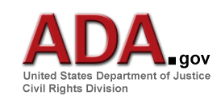
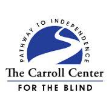

Public Policy and Viewpoints
This page highlights how our state and/or national policies help or hinder the pursuit of justice against ableism according to Catholic Social Teaching.

Policy:
The Americans With Disabilities Act
-
The Americans with Disabilities Act (or the ADA) is a law passed by Congress to ensure rights for American citizens who have disabilities. It describe how buildings must accommodate individuals with physical disabilities and lists specific standards each building must meet. The ADA Handbook is a government-issued document from 1990 that provides details on how the ADA affects companies, how business owners should make accommodations in compliance with the act, and what frequently-asked questions have already been answered (this document can be found under S,D,&T).
-
Overall, this policy does discourage discrimination against individuals with disabilities, but it doesn't go far enough to protect people when these accommodations aren't maintained (as they are normally aren't), which means that Catholic Social Teaching is only being partway upheld (the dignity of life is not being fully protected under these laws). To learn more about reporting ADA violations or advocating for ADA improvements, visit the ADA website.
Policy:
The Developmental Disabilities Services Act
-
The Developmental Disabilities Services Act is a piece of legislature, which guarantees additional rights and freedoms to disabled individuals in the state of Nebraska. This includes information about additional services under Medicaid, funding for programs, and how these additional needs will be met.
-
While this policy does improve upon the ADA, it still leaves room for loopholes that can be detrimental to the disabled community in Omaha, which means that Catholic Social Teaching is only being partway upheld here, too (the dignity of life is not being fully protected under these laws, either, even though this act builds upon the ADA in NE regulations). To learn more about reporting DDS violations or advocating for DDS improvements, visit the DDS website.

Viewpoint:
We Can Do Better Employing People With Disabilities
-
This article describes how many businesses turn away from hiring people with disabilities despite the Americans with Disabilities Act and how it causes those individuals to suffer economically. The article is published by the Carroll Center for the Blind, which aims to help people with visual impairments. If you would like to read this article, it can be found under S,D,&T
-
While this article was written specifically about the visually impaired, the same concepts are applicable to all disabilities: we as a nation could improve our hiring habits. To learn more about the Carroll Center for the Blind, visit their website here.
-
I believe this is a great article that describes how we can improve our economic habits by supporting everyone in our community (and not just those who are fully abled). Poverty is such unnecessarily rampant issue in the disabled community and it's time that we step up and help our siblings out.
Viewpoint:
Progression
-
This article describes one woman’s view of how accessibility and inclusion for those with disabilities have improved over the years. It explains that, while we still have some ways to go, life for disabled individuals is much better now than in previous times.
-
To read the full article from the Disability Rights Nebraska Blog, please visit the S,D,&T page.
-
I definitely agree with this article that Nebraska as a state has cme a long way in accepting those who have disabilities, but I really do think that we have quite a distance to go because there are, unfortunately, people out there with the mindset that those with disabilities do not have the dignity guaranteed to every person in the bible. This article states these sentiments beautifully and is well worth the read.
Viewpoint:
Including Samuel
-
In the documentary Including Samuel, Dan Habib talks about how his son, Samuel Habib, has Cerebral Palsy and how that impacts his daily life. As Samuel grows up, inclusion becomes more and more difficult because his peers mature faster than he does.
-
Part of the documentary focuses on a man named Keith Jones, a disability rights activist who grew up in the ‘70s with Cerebral Palsy. Keith describes the adversity he faced as he was consistently told that he couldn’t have the normal life he wanted.
-
Dan’s son Samuel was diagnosed with Cerebral Palsy around age one. His family works every day to make sure he is happy and healthy in his environment. To help him with his speech issues, Samuel has a machine that can speak for him. To help him accept who he is, his parents don’t constantly worry about his future; they live in the moment by his side.
-
The documentary seeks to highlight the social discrimination and the physical obstacles children with disabilities face every day in their daily lives. To watch the documentary, head to the S,D,&T page.
-
This documentary is a great addition to the conversation about disabilities in schools. While the story of Samuel doesn't take place here in Nebraska, it does cover many of the same issues Mosaic (the spotlighted agency) attempts to tackle: the ideas that those with disabilities must be separated and do not deserve dignity. These ideas are incredibly untrue and are proven so by following the story of Samuel and the meaning he and his family find in his interactions with others.